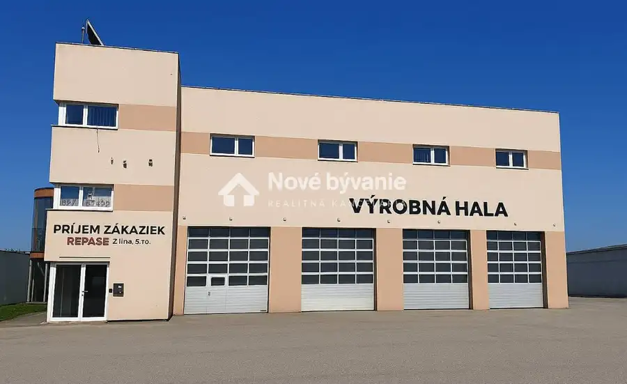
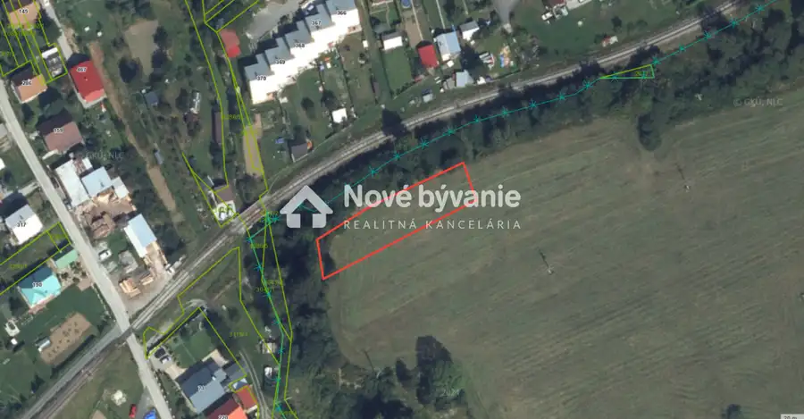
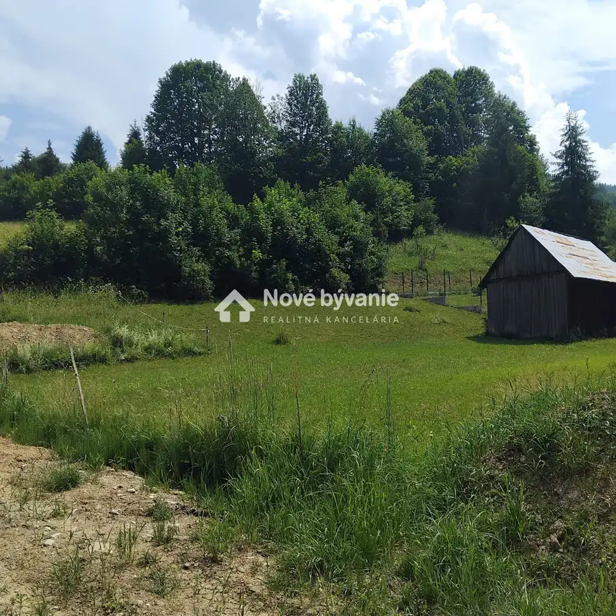
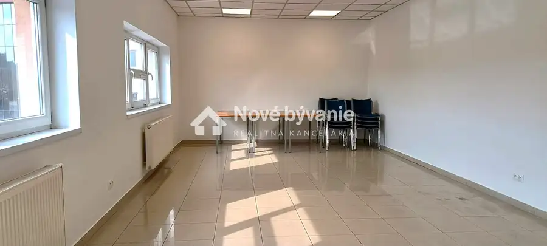

Skladové - výrobné priestory na prenájom ID: N013-28-LEMIa
Žilina

- Plocha203.47 m²
- StavČiastočná rekonštrukcia
- VlastníctvoFiremné
O nehnuteľnosti
ID:N013-28-LEMIa Ponúkame na prenájom vykurované skladové resp. výrobné priestory na Priemyselnej ulici v Žiline, blízko centra mesta. Skladové - výrobné priestory sa skladajú zo 160,14m² využiteľnej plochy, sociálnych priestorov (WC + umývadlo) o veľkosti 10,2m² a suterénu o rozmere 33,13m² ( šatňa ). Skladové - výrobné priestory majú v časti montážnu jamu, ktorú je možné pod dohode s majiteľom uzavrieť. Priestory disponujú inžinierskymi sieťami elektrika 230+380 V, voda, plyn, kanalizácia. V objekte je natiahnutý optický internet a disponuje zabezpečovacou signalizáciou. Možnosť parkovania na pozemku prislúchajúcemu k objektu. Cena prenájmu je nasledovnáVýrobný/ skladový box 160,14m² - cena 5,50€ / m² + energie 2€ /m² / bez DPHSociálne zariadenie 10,2m² - cena 4,50€ / m² + energie 2€ /m² / bez DPHSuterén 33,13 m² - cena 4,50€ / m² + energie 2€ /m² / bez DPHCena spolu s energiami bez DPH je 1483€ mesačne. Zmluva prenájmu min. na 1rok.V prípade záujmu ma kontaktujte na t.č. 0949 436 056 prípadne mailom milova@novebyvaniereality.sk
Parametre
- Druh
- Skladový objekt
- Dátum zverejnenia
- 24. 03. 2026
- Elektrina
- Na pozemku, Na pozemku - 230 V, Na pozemku - 400 V
- Energie
- 2
- Stav nehnuteľnosti
- Čiastočná rekonštrukcia
- Telekomunikácie
- Internet
- Typ
- Prenájom
- Vlastníctvo
- Firemné
- Voda
- Na pozemku - Diaľkový vodovod, Pri pozemku - Verejný vodovod
- Vykurovanie
- Lokálne
- Úžitková plocha
- 203.47 m²
Kde to je


Mohlo by Vás zaujímať

PozemokNové 23 020 €Pozemok na záhradkárčenie - Podvysoká ID: N001-14-LEMIE Podvysoká 1001 m²
PozemokNové 66 000 €Pozemok na výstavbu domu v Terchovej ID: N004-14-LEMI Terchová 669 m²
Komerčné priestoryNové Cena na vyžádáníAdministratívne priestory na prenájom v Žiline N012-26-LEMIa Žilina 70 m²